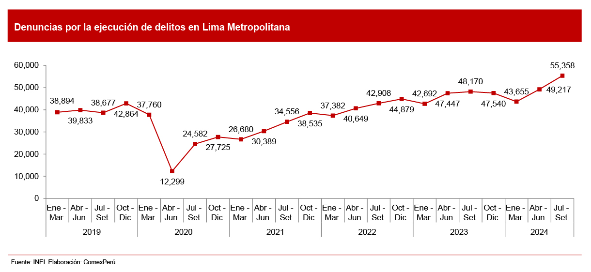
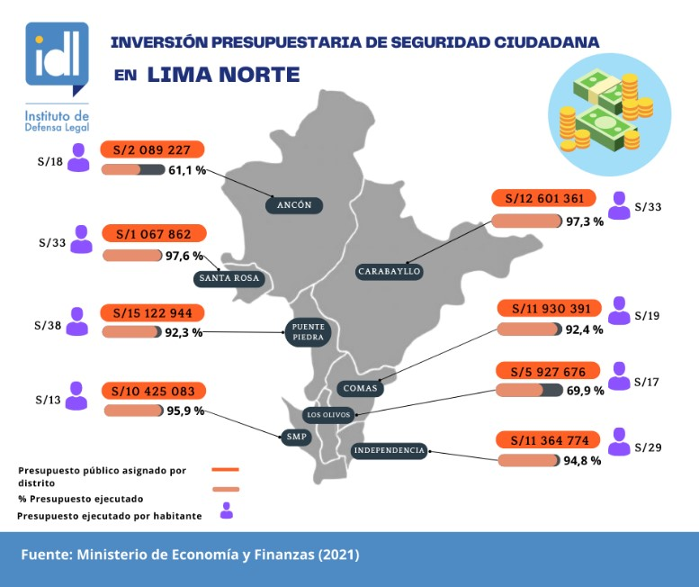

|
|
|  |
.png) |
 |
Inseguridad Lima metropolitana En el primer semestre de 2025 se registraron 5 735 denuncias por extorsión en Lima Metropolitana.
En 2025 (hasta primeros meses) se reportaron 482 homicidios en la ciudad.
En conjunto con Callao, entre enero y noviembre de 2025 se contabilizó que al menos 56 choferes fueron asesinados; muchos ataques estarían vinculados con extorsión.
Las denuncias por extorsión entre enero y octubre de 2025 suman 23,213 en Lima + Callao (aunque no todas ocurren solo en Lima).
Interpretación Lima sigue siendo epicentro de extorsiones y homicidios, con un aumento notable en denuncias 2025. La ciudad acumula buena parte de los casos denunciados en todo el país. |
Callao Inseguridad Hasta octubre de 2025, Callao registró 165 homicidios, superando los 146 del 2024, lo que marca un récord histórico para la provincia.
En el primer semestre de 2025, los homicidios en Callao aumentaron un 57 % respecto al año anterior.
En cuanto a extorsión: de enero a julio de 2025 se registraron 555 denuncias en sus sectores.
En comparación con 2024, la extorsión también aumentó — crecimiento del 52–55 % en denuncias.
Interpretación Callao vive una crisis importante de homicidios y extorsiones; los datos recientes muestran incremento sostenido de violencia y delitos graves. |
Regiones del norte inseguridad Perú tiene tres regiones principales: costa desértica, sierra andina y selva amazónica, lo que le da gran variedad de climas y ecosistemas.
Aunque los datos disponibles son menos homogéneos, hay registros de un crecimiento de extorsiones en varias regiones fuera de Lima:
En 2025, entre enero y mayo, a nivel nacional se registraron 11 475 denuncias por extorsión, lo que representa un incremento del 22.5 % respecto al mismo período del año pasado.
Algunas regiones como La Libertad, Lambayeque, Piura, Madre de Dios, Cusco, Puno, entre otras, evidencian incrementos notables en denuncias de extorsión en 2025 respecto a 2024.
En cuanto a homicidios, según estadísticas recientes, en La Libertad los casos pasaron de 117 en 2024 a 124 en 2025; en Lambayeque bajaron ligeramente (pero la región sigue reportando violencia).
Interpretación La inseguridad se ha expandido — no se limita solo a Lima y Callao. Regiones del norte y del interior del país registran aumentos de extorsión y violencia, lo que sugiere que la delincuencia ya no es un fenómeno exclusivamente urbano o metropolitano. |